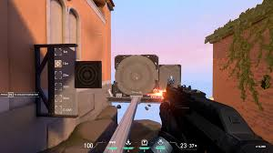

Good Aim Recipe

Description
Aiming is one of the most fundamental skills in FPS games. Today we will teach you the recipe to have good and consistent aim in VALORANT.
Ingredients for good aim
- Senstivity
- Crosshair Placement
- Flicking
- Spray Control
Steps
- Go to the practice range and adjust your senstivity till you can comfortably move your character 180 degrees in one flick.
- Spawn the training range and focus on the heads of the bots to build a muscles memory as to where the head is located. While playing the game always focus on the the height at which enemy heads are on different areas of the map. Once you know that you just have to shoot without even moving your mouse.
- Do the 100 Bots shooting drill and try to flick on the opponents heads to improving flicking incase the opponents appear at unexpected places in the game. Once you are comfortable doing these start the 30 bots flicking drill on Medium difficulty.
- Try to learn the general spray pattern of the guns you use and never spray more than 10-12 bullets unless absolute necessary.